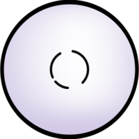
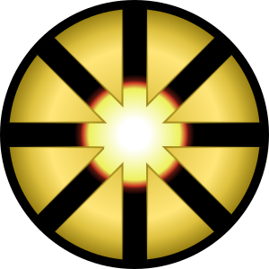
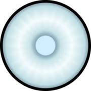
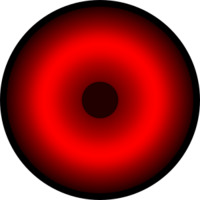
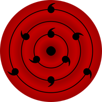
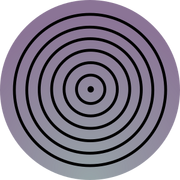
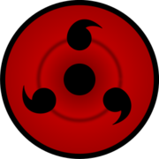
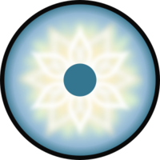
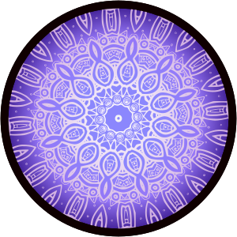
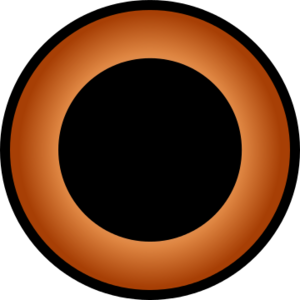

|  |  |  |
| Byakugan | Isshiki's Dōjutsu | Jōgan |
|---|---|---|
| The Byakugan (白眼, literally meaning: White Eye, meaning (Viz): All Seeing White Eye) is a kekkei genkai dōjutsu that originated from the Ōtsutsuki clan. After the Ōtsutsuki settled on Earth, the Byakugan became more commonly associated with the Hyūga clan, descendants of the Ōtsutsuki. It is regarded as one of the "Three Great Dōjutsu", the others being the Sharingan and the Rinnegan. | This is the unnamed dōjutsu used by Isshiki Ōtsutsuki and later Kawaki through his Kāma. The iris and pupil of this eye are yellow with a black wheel-like pattern with eight spokes coming out of the centre. | The Jōgan is a unique dōjutsu that is known only by the Ōtsutsuki Clan, whose members claim it's troublesome and that it's a power strongly inherited from their clan. In the manga the dōjutsu is featureless in appearance with a barely visible pupil. When depicted in the anime, the dōjutsu is light blue in colour with a darkened sclera and visible pupil. |
|
 | |
| Ketsuryūgan | Mangekyō Sharingan | Ranmaru's Kekkei Genkai |
| The Ketsuryūgan (血龍眼, literally meaning: Blood Dragon Eye), is a dōjutsu, which appears in certain individuals of the Chinoike clan. The Ketsuryūgan is recognised by its reddish colour, giving a special appearance for the users of this dōjutsu, characterised as holders of "eyes as red as blood". Its power earned it comparison to the Three Great Dōjutsu. | The Mangekyō Sharingan (万華鏡写輪眼, literally meaning: Kaleidoscope Copy Wheel Eye) is an advanced form of the Sharingan that has only been activated by a handful of Uchiha. They are noted to be the "heavenly eyes that see the truth of all of creation without obstruction" (天壌の理を掌握せし瞳, tenjō no kotowari o shōakuseshi hitomi). | Ranmaru uniquely possessed a dōjutsu kekkei genkai which, when activated, causes his eyes to glow red in colour. It grants him abilities similar to those of the Byakugan, which his own dōjutsu has been likened to. |
|  |  |  |
| Rinne Sharingan | Rinnegan | Sharingan |
| The Rinne Sharingan (輪廻写輪眼, literally meaning: Saṃsāra Copy Wheel Eye) is a dōjutsu kekkei mōra and the predecessor to the Rinnegan and Sharingan. It is characterised by red sclerae and irides, with a ripple pattern spreading over the eyeball and nine tomoe. | The Rinnegan (輪廻眼, literally meaning: Saṃsāra Eye) is reputed as the most exalted eye amongst the "Three Great Dōjutsu", the others being the Sharingan and the Byakugan. It is said that in times of disorder, one who wields the Rinnegan is sent down from the heavens to become either a "God of Creation" who will calm the world or a "God of Destruction" who will reduce everything to nothingness. The Rinnegan is characterised by concentric circles covering the eyeball. | The Sharingan (写輪眼, literally meaning: Copy Wheel Eye, meaning (Viz): Mirror Wheel Eye) is the dōjutsu kekkei genkai of the Uchiha clan that appears selectively among its members. It is regarded as one of the "Three Great Dōjutsu", the others being the Byakugan and the Rinnegan. |
|  |  |  |
| Tenseigan | Shion's Dōjutsu | Yome's Dōjutsu |
| The Tenseigan (転生眼, literally meaning: Reincarnation Eye) is a dōjutsu introduced in The Last: Naruto the Movie. The movie's novelisation explains that the Tenseigan can be acquired when an Ōtsutsuki is implanted with the Byakugan of a Hyūga: this combination of the two clans' chakra transforms the Byakugan into Tenseigan. | In Naruto Shippūden the Movie, Shion has a dōjutsu that allows her to see a select person's future. Usually this activated involuntarily to show her the person's eventual death. When activated, her eyes change into a violet, ornate, pupil. | Yome has a dōjutsu that allows her to dilate her pupils and track down enemies via the reflection of tiny water droplets. Yome can also use this ability to augment her evasion-skills during combat. |
1. Naruto chapter 658, page 8
2. Third Databook, page 313
3. Naruto chapter 671, page 9
4. Naruto chapter 78
5. Sha no Sho, page 313
6. Boruto episode 15
7. Boruto episode 65
8. Boruto chapter 1, page 5
9. Boruto episode 1
10. Naruto chapter 224, pages 7-8
11. Third Databook, pages 274-275
12. Naruto chapter 373, page 2
13. Sha no Sho, page 313
14. Naruto chapter 12, page 7
15. Third Databook, page 313
16. Third Databook
17. Naruto chapter 196, pages 4-5
18. Boruto episode 8